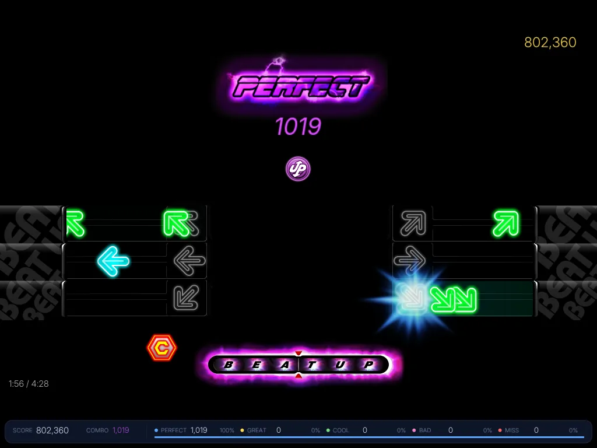

BeatUp Engine · Final Public Release (v1.2)
Chart, play and verify BeatUp charts.
A rhythm-game engine with a built-in chart editor and patcher for Windows. Version 1.2 is the final public release with Auditor Mode. (Version 1.3 and onward are restricted internal builds; no public downloads are available for v1.3+).

- Platform
- Windows 10 / 11, x64
- Built with
- C++ and SDL2
- Distribution
- Installer + portable ZIP
- Price
- Free
01 · Chart editor
Edit against the running game.
Editor and game share one time base, so a note you place is judged exactly as it will be played.
-
Waveform and lane grid
A waveform strip next to the eight columns 7 · 4 · 1 · 9 · 6 · 3 · Space · Finish, with snap grid, beat and MADI markers.
-
Transport and readout
Play, pause and seek. BPM, beat, MADI, combo and maximum score update while you work.
-
Live game view
The chart runs in the real game view with judgments, score and receptors. Split View keeps editor and game side by side.
Screenshot from a v1.0.x build.
02 · Play and patch
Play any chart. Keep your library tidy.
The same engine that you edit with is the one you play on.
-
Play your chart
Run the charts in your charts folder straight from the main menu.
-
Judgment, combo and score
Perfect timing is configurable; Great, Cool, Bad and Miss follow refined rules. Chance modes such as Rapid, Vanishing and Wave change how notes arrive.
-
Receptors and Challenger Mode
Receptor bar and colours are themeable. The optional Challenger Mode makes runs stricter.
-
Patcher song library
Browse songs with rankings, check BPM, length and level, then press Play. The Patcher validates required content, downloads patches and applies each song's timing offset.



Screenshots from v1.0.x builds.
03 · Auditor Mode New in 1.2
Check a chart. Show what changed.
Auditor Mode makes chart revisions traceable. It opens in its own window and detects the BPM of a .slk from the music and the chart.
-
Inspect
Open a
.slkor.bu. The Auditor lists duplicate arrows, arrow and Space in one row, Finish problems, empty charts, invalid BPM and long gaps. Click an entry to jump to that row. -
Correct and compare
Fix the chart in the normal editor. New notes get a green frame, removed notes a red ghost. The compare view shows original and revision side by side.
-
Document
Every change is written to a
.csvlog next to the chart. In an audit project the original, the revision and the log travel together in one.bu.
Original
Revised
Nr;Action;Note;Lane;Before;After;Operation 1;OPEN;Session;;;;open 2;MOVE;Arrow;9;9 @ M0:04;9 @ M0:06;move 3;REMOVE;Arrow;3;3 @ M0:08;-;delete 4;ADD;Arrow;7;-;7 @ M1:04;place note 5;BPM;BPM;;120;121;bpm change 6;LANE;Arrow;6;9 @ M0:10;6 @ M0:10;mirror 7;SAVE;Session;;;;save project
Illustration with example data, not a screenshot.
04 · Features
What is in the box.
Timing, gameplay, editing, the chart assistant, project files, patching and the Auditor in one program.
- 01
Timing and judgment
Gameplay graphics and hit detection use one time base, with configurable Perfect timing and refined Great, Cool, Bad and Miss behaviour.
- 02
Chart editor
Receptor Bar, Split View, vertical or horizontal canvas, waveform, beat and MADI navigation, selection, copy/paste replacement and undo/redo.
- 03
Project files
.buprojects keep audio, BPM, offset, notes, speed and the saved playback position together for a complete editing session. - 04
Theme editor
Change the core interface colours, waveform, minimap and Receptor Bar with a live preview and persistent
theme.inithemes. - 05
Patcher
Validate required content, download new patches, recover missing files and apply each song's configured timing offset.
- 06
Chance and Challenger
Rapid, Vanishing, Wave, Inverted, Speed Up and Halfway Chance modes, with the optional Challenger Mode for stricter runs.
- 07
Chart assistant
Detects BPM, beats and transients and proposes an editable chart draft that follows the song, with Spaces on the MADI and sections by intensity. It can chart on the full mix, vocals or instruments.
- 08
Engine diagnostics
An optional overlay for frame times, audio stalls, input delay, renderer and memory, with an exportable report for problems that only show up on one PC.
- 09
Faster workflow
Drag and drop for music, charts and projects, a built-in metronome, duplicate / cut / move for selections and automatic backups.
- 10
Auditor Mode
Open a
.slkor.bu, check it for errors and inconsistencies and correct it in the editor. It runs in its own window with automatic BPM detection. - 11
Audit log and compare
Every change lands in a
.csvlog, modified notes are marked in the editor and original and revision can be compared side by side in one.buaudit project.
05 · Video
The v1.0 walkthrough.
A tour of the editor, the Patcher and the first stable release. The video loads from YouTube only after you press play.
06 · Releases
Version Releases & Changelogs
BeatUp Engine v1.2 is the final public release. Starting with v1.3, subsequent versions and new launcher tools are restricted internal builds with no public downloads.
v1.2 is the official final public release. It is feature-complete and freely available for download below. Earlier projects and configuration settings remain fully supported.
| Version | Date | Changes |
|---|---|---|
| v1.2 · Final Public | Oct 2026 | Final public release. Auditor Mode with chart inspection, CSV audit log, change tracking, side-by-side comparison, audit projects, its own window and automatic BPM. Play your chart always starts in game view. |
| v1.1 | 2026 | Chart Assistant with automatic BPM detection, drag & drop, built-in metronome, optional Engine Diagnostics, faster editing workflow and autosave. |
| v1.0.1 | 2026 | Play your chart, music inside .bu projects, one Options window, optional Patcher, everything built into a single .exe, new BeatUp Night theme, calmer interface. |
| v1.0 | 2026 | First stable release: new ranks and result card, compact score bar, snap hotkeys, Numpad Charting, bookmarks in projects. |
| v0.6.1 | 24 Sep 2026 | Receptor Bar in Editor, receptor theming, per-song Patcher offsets. |
| v0.6 | 21 Sep 2026 | Theme Editor, redesigned menu, onboarding, Split View and judgment rework. |
| v0.5.1 | 18 Sep 2026 | Onboarding, menu/Patcher redesign, Perfect positioning and judgment refinements. |
| v0.5 | 17 Sep 2026 | Challenger Mode, borderless fullscreen, 2K/4K support, DPI handling and .bu association. |
| v0.4 | 13 Sep 2026 | Unified timing, animated arrows, .bu projects, colored snap grid and import/export. |
| v0.3 | 10 Sep 2026 | Patch management, file validation and missing-content recovery. |
| v0.2.x | Sep 2026 | Patch Manager, waveform, selection, copy/paste replacement, undo/redo and customization. |
Changes and additions in v1.3 – v1.4.1 compared to v1.2:
| Category | Status | Changes from v1.2 to v1.3 |
|---|---|---|
| Direct3D 11 Backend & Flip Model | 🔒 Restricted | Native Direct3D 11 backend with DXGI Flip Model architecture, resolving the 290 FPS cap on modern Windows 11 and NVIDIA GeForce RTX hardware. |
| Combo Caching & Shaders | 🔒 Restricted | Zero-allocation combo text caching, single-pass foreground border/shadow rendering pipeline, and corrected diagnostics timing overlay. |
| Engine Launcher Integration | 🔒 Restricted | Seamless handshake with the internal Engine Launcher v1.1.5, differential delta patching, automated integrity checks, and custom chart protection. |
| Input & Timing Pipeline | 🔒 Restricted | High-polling rate input handling (1000Hz+ keyboard/numpad polling), reduced input-to-draw frame latency, and sub-millisecond judgment precision. |
| Auditor Telemetry 2.0 (v1.3–v1.4) | 🔒 Restricted | Expanded automated chart anomaly detection, lag-free native monitor refresh rate Auditor sync, and extended CSV telemetry export capabilities. |
| Chart Manager & Profile Pill (v1.4.1) | 🔒 Restricted | Play Your Chart now includes Delete .bu with inline confirmation (Del key), Open Folder button, F5 Refresh badge, plus a Launcher-synced Profile Pill with avatar & HWID copy. |
| Distribution Policy | 🔒 Restricted | Closed development only. No public installer, portable ZIP or binaries are distributed. For a public stable version, please use v1.2 below. |
Looking to download BeatUp Engine? Version 1.2 is free and open to everyone.
07 · Download
BeatUp Engine v1.2
Use the installer for the easiest setup. A portable ZIP is also available if you prefer to run BeatUp Engine without installing it.
Notice on subsequent builds: BeatUp Engine v1.2 is the final version available for public download. Versions v1.3 and above, as well as the Engine Launcher, are restricted internal tools and not distributed publicly.
Only download BeatUp Engine from this page or the official GitHub release. Never run copies from other websites or re-uploads.
Windows or your antivirus shows a warning?
This is a false positive. BeatUp Engine is a small, independent, free project. The program is not code-signed because signing certificates are expensive, and new programs that few people have downloaded yet are often flagged by Windows and some antivirus scanners simply because they are unknown.
Windows SmartScreen (“Windows protected your PC”):
- Click More info.
- Click Run anyway.
Antivirus: if the file was moved to quarantine, restore it and add an exception for your BeatUp Engine folder only. There is no need to switch your antivirus off. You can also report the file to your antivirus vendor as a false positive.
Final Public Release · v1.2
81f05481d4008a1e9c787a967b07ddbaa3c9748536862dbacc540ecd77d15e41
Portable version (.zip)Run without installation
071c77ebb22122c5d08b3ca0ca10c40240ff510c3c3e1c82ed0b8425a8b2b245
08 · Community
Made by BeatUp charters, for BeatUp charters.
Shaped by the players, testers and charters of the BeatUp community. Thank you to everyone who tested builds, reported bugs, shared charts and ideas, and thank you for following the project to its final release.
Testing
- Wonderful93
- nvme
- SCrispy
- miki
Feedback and ideas
- Wonderful93
- nvme
- SCrispy
- miki
- nongginga
- Rayzii
- Noely
Special thanks
- Wonderful93
- nvme
- SCrispy